La Casona de los Retana
Una mirada a la Sala Viva
Diez segundos entre el vidrio, la cerámica y la piedra de las repisas familiares.

MadrecitaLa Cava ↗La Casona de los Retana
Diez segundos entre el vidrio, la cerámica y la piedra de las repisas familiares.